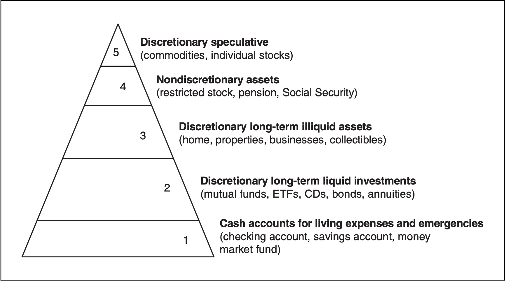
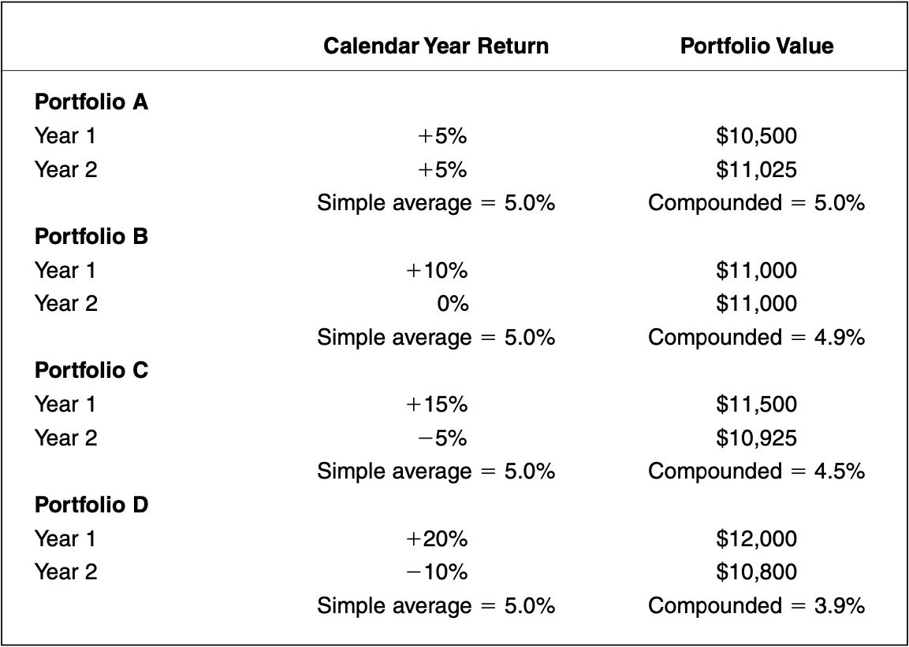
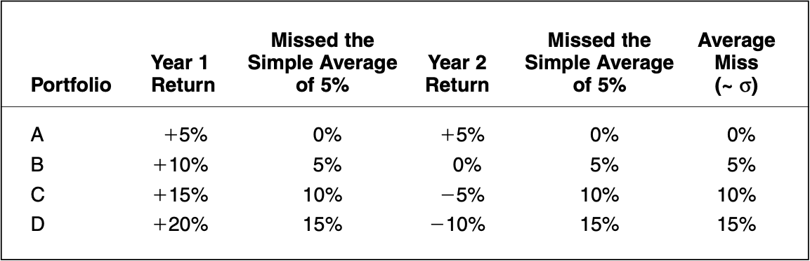
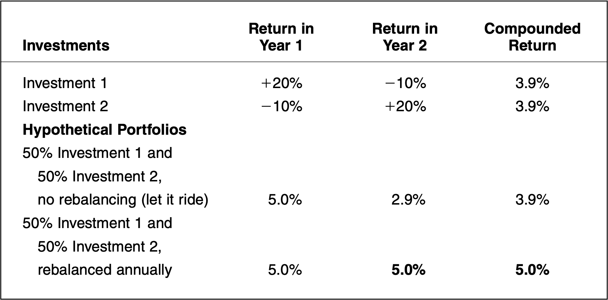
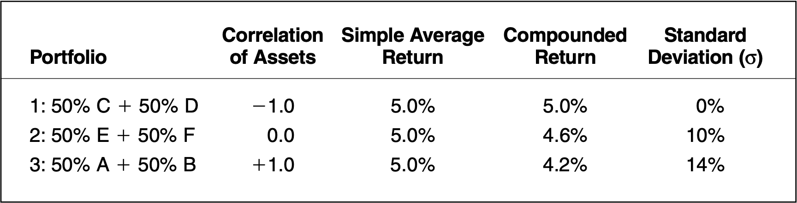

《資產配置投資策略》：資產配置的基本概念
《資產配置投資策略》是 All About Asset Allocation 第二版。作者用淺白的例子傳達讀者資產配置與分散投資的重要性，我認為這是一本理論與實務兼具的書籍，此為第一部分「資產配置的基本概念」之個人閱讀摘要整理。

投資計畫
- 投資計畫是獲取長期投資成就的關鍵
- 資產配置是投資計畫的關鍵
- 一定要堅守對既定策略的紀律和承諾
- 實現財務保障沒有捷徑
成功的終生投資經驗取決於這三個關鍵步驟：穩健投資計畫的擬定；投資計畫的徹底執行；以及無論時機好壞都堅持並維護這個計畫的紀律。如果能擬定一套理想的計畫，並依照計畫行事，將更有可能獲得財務上的自由。
投資計畫就像是一張引導你獲得合理長期投資成果的路徑圖，而資產配置決策則是投資計畫的最重要步驟。所謂資產配置決策，就是決定要把多少資金投入每一種不同的資產類別，例如股票、債券、不動產和現金。
下圖是一個用來進行資產分類的投資金字塔，它將投資分成五個部分。從這個金字塔可看出這些資產的變現性差異，以及你對這些資產的自主裁決 (discretion) 能力有何差異。

- 裁決型投資標的 (Discretionary speculative)：原物料商品、個股
- 非裁決型資產 (Nondiscretionary assets)：限制股票、退休金、社會安全給付金
- 裁決型的長期低變現性資產 (Discretionary long-term illiquid assets)：住宅、房地產、事業、收藏品
- 裁決型的長期高變現性投資標的 (Discretionary long-term liquid investments)：共同基金、ETF、定存單、債券、年金
- 供生活開銷與緊急用度的現金帳戶 (Cash accounts for living expenses and emergencies)：支票存款帳戶、儲蓄存款帳戶、貨幣市場基金
這五個層次的投資標的對資產配置都非常重要，其中有些層次完全操之在己，但有些則是你無法掌握的。《資產配置投資策略》所描述的資產配置主要是建議投資人應採取穩健的作法，把預定投入裁決型高變現性投資標的的那部分資金，廣泛分配到分散投資的股票與債券共同基金及指數股票型基金 (ETF)。長期下來，這樣的投資策略證明能降低投資組合風險，同時提升投資報酬。
投資風險
- 投資報酬和投資風險直接相關
- 考量稅負與通貨膨脹後，世界上沒有真正的零風險投資標的
- 投資實務界人士眼中的風險是投資標的的波動性
- 一般人眼中的風險是虧本
「天下沒有白吃的午餐」，想獲得某種東西，勢必得付出某種代價。換言之，調整通貨膨脹和稅負後，完全不願承擔投資風險的投資人不該期望獲得任何報酬。
投資風險的定義非常多元，這取決於你個人的情況和你衡量的因素是什麼。風險可以是：
- 價格的波動性
- 一項投資標的的虧損金額
- 相對通貨膨脹和稅負的損失
- 無法實現個人長期財務目標的可能性
許多學術界人士和研究人員把投資標的價值的上下波動定義為風險。波動性是以標準差 (standard deviation) 的單位數來衡量；價值的變異性愈大，標準差就愈高。
下表列出了四個投資組合，每個投資組合的初始金額都是 1 萬美元。從中明顯可見，年度報酬率的波動性會導致帳戶價值降低。

分析上表那四個投資組合後，確認所有帳戶的簡單平均年度報酬率都是 5.0%，但每個帳戶的複合報酬率（年化報酬率）卻不一樣。
波動性的衡量指標就是標準差，我們可以把標準差想成投資組合單期報酬率和該投資組合的簡單平均報酬率之間的「平均落差」。舉例來說，簡單平均報酬率 5% 的投資組合可能從未在任何一年創造正好 5% 的報酬率，而實際報酬率和 5% 簡單平均報酬率之間的平均落差值，就是該投資組合的年度標準差。如下圖所示，列出了四個投資組合的標準差計算。

我們可以透過這兩張表所呈現的結果，理解一個概念：
報酬率的波動性愈高，就會導致複合報酬率降低；而報酬率的波動性愈低，複合報酬率也就愈高。
因此，任何能夠降低投資組合報酬率波動性但又不導致簡單平均報酬率降低的策略，一定能促使複合報酬率上升。
資產配置
- 分散投資能降低大額虧損的機率
- 投資組合再平衡有助於控制風險
- 各資產類別之間的關聯性並非一成不變
- 最好是選擇低相關性的資產類別，可惜恆久低相關性的資產類別很難找
「不要把所有的雞蛋放在同一個籃子裡」，分散投資是將財務風險分散到不同投資標的，以降低發生大額虧損的機率的一種作法。資產配置也是分散投資的一種，也就是把風險分散到不同的市場。
在實務上，資產配置和單純的投資組合分散投資，較明顯的差異之一是投資組合再平衡。舉個例子，假定你的配置目標是設定要投資 50% 的股票與 50% 的債券，而經過一年，投資組合的資產組成比重因市場波動而變成 60% 的股票和 40% 的債券。這時，只要賣掉那額外的 10% 股票，多買進 10% 的債券，就能讓投資組合恢復原始資產配置比重，也就是 50% 的股票和 50% 的債券。另外，當你投入新資金、從帳戶提領資金或者收到股利或利息時，也可以進行投資組合再平衡作業。乍看之下，投資組合再平衡可能會讓人感覺有點違反直覺，不過這個流程基本上符合「賣高買低」的邏輯。
下表是一個投資組合再平衡的例子。這個表格假設投資期間為兩年，而投資組合持有兩種不同的投資標的。第一個投資組合假設不進行投資組合再平衡，第二個投資組合則假設再第一年結束後，將投資組合再平衡到每一項投資標的個投入 50% 資金的狀態。

「隨它去」投資組合的投資績效和再平衡過的投資組合比較起來差異非常大。個別來看，投資標的 Investment 1 和 Investment 2 在那兩年都各創造了 3.9% 的複合報酬率。因此，一開始分別投入 50% 資金到這兩個標的的「隨它去」投資組合，也在那兩年間獲得了 3.9% 的複合報酬率。然而，在第二年年初堅持各配置 50% 資金到每一項投資標的的再平衡投資組合，卻成功消除了報酬率上的波動性，也促使投資組合的年度複合報酬率上升到 5%。從這個簡單的例子，我們便可理解為何年度再平衡作業有助於降低投資組合風險並提高年度報酬率。
投資組合再平衡的方法有很多種，最常用的兩種是：
- 根據日期
- 根據偏離目標配置的百分比
使用日期法的投資人會選擇在特定期間（例如一年、一季或一個月）後進行再平衡作業。另一些投資人偏好根據各項資產實際投資比例偏離資產配置目標的百分比狀況來進行再平衡，換言之，一旦投資組合目前的配置比例脫離原始配置目標達特定百分比後，他們就會進行再平衡，不會在意時間點。
投資組合年度再平衡有助於掌握分散投資的利益，但這當中有一個重要假設：投資組合裡的各項投資標的並非齊漲或齊跌。因此投資標的的選擇和再平衡作業一樣重要。
透過相關性分析 (correlation analysis)，就比較容易選出通常不會齊漲齊齊跌的投資標的。相關係數 (correlation coefficient) 可以用來衡量兩種投資標的相對於其平均報酬率的連動傾向。如果兩項投資標的朝同一方向波動，且各自的報酬率同時高於其平均報酬率，那這兩項標的就是正相關 (positive correlation)；如果兩項投資標的朝反向移動，且各自的報酬率皆低於其平均報酬率，這兩項標的就是負相關 (negative correlation)；如果一項投資標的的波動相對於其平均報酬率的狀況和另一項投資標的完全無關，那這兩項標的就是非相關 (noncorrelated)。
下表概要說明了利用相關性將獲得怎樣的分散投資利益。表上三個投資組合每年的簡單平均報酬率皆為 5%，但是各個投資組合的複合報酬率都不同，因為每個投資組合的波動性不一樣。投資組合 Portfolio 1 持有兩個彼此負相關的投資標的，所以它的風險最低，報酬率也最高。相反的，投資組合 Portfolio 3 持有兩個彼此正相關的投資標的，那個投資組合的風險較高，最後實現的報酬率也最低。

在建構投資組合時，若能持有彼此負相關或非相關的資產，當然能獲得不錯的收益，但問題是要怎麼找到這些投資標的。過去的相關性並不能做為未來相關性的可靠指標，因為相關性數字經常改變，各資產類別之間的相關性隨時可能變得更密切或不相關。
多元資產類別投資
- 持有多種不同的資產類別比持有少數幾種資產好
- 每一種獨特的新資產類別都可能有助於降低投資組合風險
- 選擇能創造正實質報酬且較低相關性的資產類別
- 你可以選擇一個良好的資產配置，但不可能選到一個完美的資產配置
多元資產類別投資的目的是要加入更多種資產類別到投資組合，進一步降低投資組合的風險，讓獲利更加提升。在發掘新資產類別時，應牢記以下五個重點：
- 彼此恆久負相關或甚至恆久非相關的低成本可投資資產類別幾乎不存在。你能夠投資的多數資產類別，至少都會有一段時間彼此正相關。
- 各資產類別之間的相關性可能會改變，而且實際上也經常改變。曾經非相關的投資標的，未來有可能變得相關，反之亦然。過去的相關性可用來預測未來的相關性，但推測結果並絕對可靠。
- 在波動性極端高的時期，你一定希望各資產類別之間的相關性愈低愈好，但通常愈是這種時候，就愈是事與願違。此時所有資產類別的相關性常會劇烈上升。2007 年至 2009 年是最貼切的例子，在信用危機爆發期間，幾乎每一項風險資產類別的價格都同步下跌，包括原物料商品。
- 在空頭市場時期，美國與外國股票市場之間的相關性尤其可能上升。例如，2001 年 9 月 11 日紐約世界貿易中心大樓遭受恐怖攻擊後，世界各地所有股票都下跌 5% 以上。
- 一個持有較多資產類別的投資組合，一定比只持有少數幾種資產類別的組合好。不過，想藉由分散投資來改善投資績效，改善程度終究有其極限，一旦投資標的超過 12 種，分散投資的利益就會漸漸消失，所需維護的成本也會增加。
總結
要獲得理想的投資成果，就必須針對自身的獨特需求設計、執行並維護一套適當的長期投資策略，而資產配置就是這個投資計畫的核心。世界上沒有零風險投資標的，也沒有零風險的資產配置策略。每個企圖賺取超額報酬率（扣除通貨膨脹與稅負後）的投資組合，一定都承擔了某種虧損風險。
在進行資產配置以前，必須先估算各種不同類投資標的的期望風險與報酬、觀察這些資產類別之間的關聯性，建構一個最可能實現個人目標且最低投資組合期望風險的投資組合。而多元資產類別投資法能降低投資組合風險，且可能提高潛在報酬率。
世界上沒有完美的資產配置，每個投資人都有獨特的需求、經驗和處境。所以最重要的目標是建立一個能創造足夠潛在報酬，但風險又不超過特定範圍的投資組合。這樣的投資組合能夠讓你順利達成財務目標，而且萬一碰上艱困的市場情境，你也比較不會因過於恐懼而產生不當的行為傾向，最終導致目標難以實現。